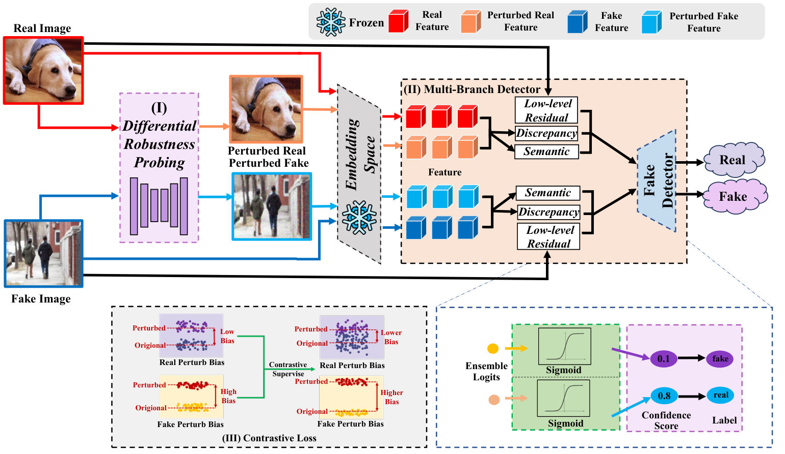
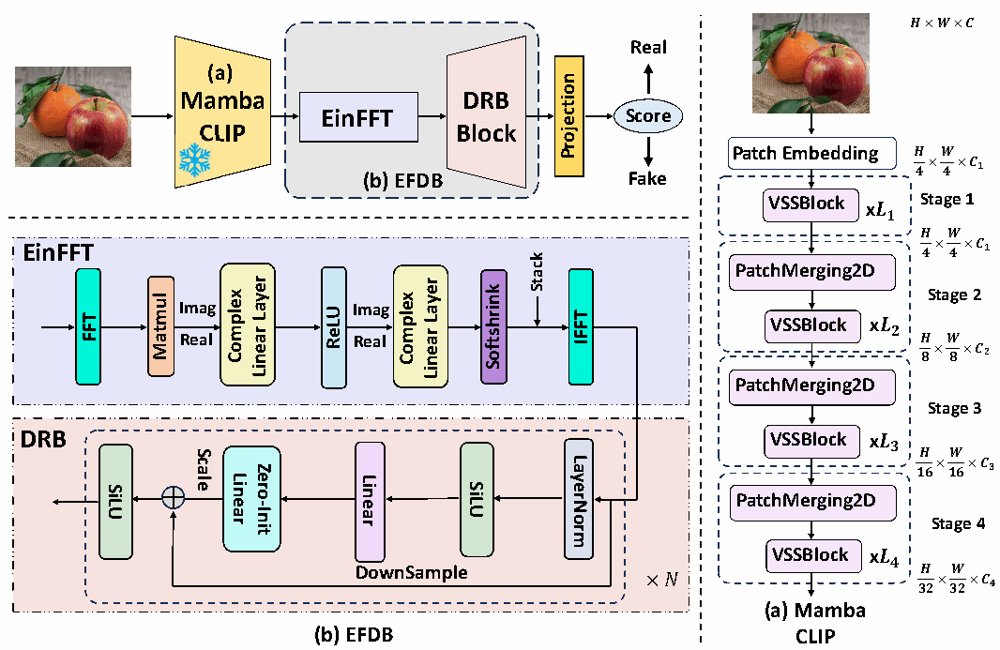

Welcome to my personal website
Computer Science and Technology · Fudan University
I am a direct PhD student in Computer Science and Technology at Fudan University (2026 cohort). My undergraduate studies were in Artificial Intelligence at Jiangnan University, where I conducted research under the supervision of Prof. Hui Li.
I am currently exploring different areas of AI research, with a broad interest in understanding model behavior and developing simple, impactful solutions to important problems.
I previously conducted research at the Jiangsu Engineering Laboratory of Pattern Recognition and Computational Intelligence, working on RA-Det and MambaGuard.
Email / GitHub / Download CV
selected publications
* Equal contribution.

ICML 2026Accepted · Co-first authorDetecting generated images through the asymmetric robustness of real and synthetic images under mild perturbations.

PRCV 2025Published · Co-first authorCombining CLIP-Mamba representations with spectral feature refinement for out-of-distribution generated image detection.
education
Direct PhD · Computer Science and Technology
Undergraduate studies · Artificial Intelligence
Undergraduate research advisor: Prof. Hui Li
Honors: National Scholarship.